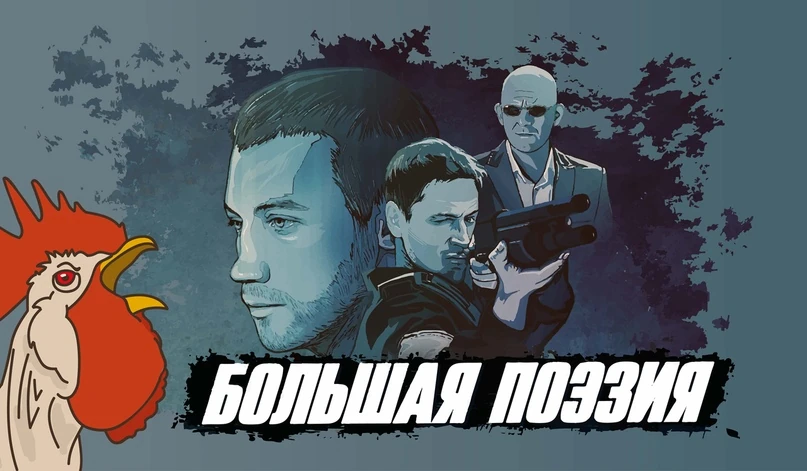
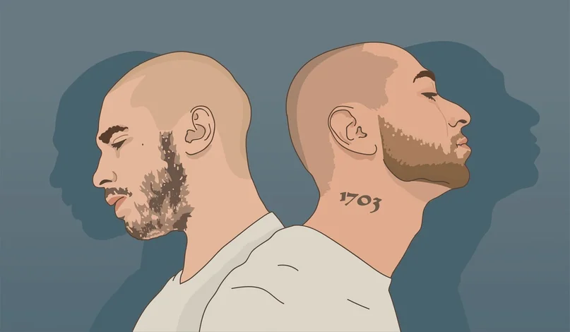
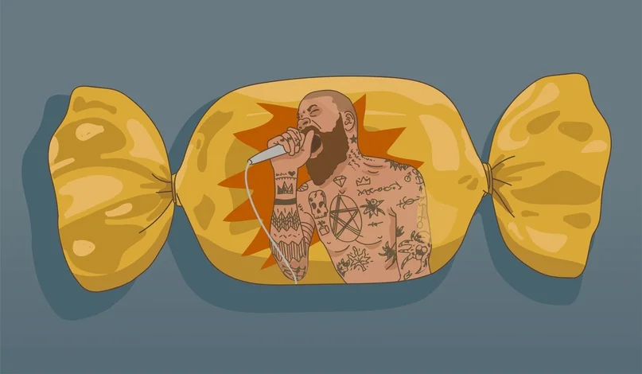

Александр Сорге посмотрел фильм про рэп, который, на самом деле, не про рэп, и подумал, что рэп — это тоже не про рэп
Видимо, гардеробы — это какой-то харам для киношников. Ибо когда я поинтересовался у буфетчика, где же раздевалка в древнем питерском храме кино под названием «Аврора», владыка попкорна и сырных начос крайне надменным тоном объяснил мне, что «гардеробы есть только в торговых центрах, у нас — кинотеатр!». Тот факт, что в Александринском театре через дорогу гардероб был, его, видимо, ничуть не смущал. Так что я смирился и покорно потел в холле кинотеатра, источая миазмы болезни в ожидании премьеры новой картины Александра Лунгина «Большая поэзия».

До премьеры фильма продюсеры активно флиртовали с зумерами, всячески намекая, что, мол, «Поэзия» — кинолента про этот ваш «ботелреп»: в бодрый трейлер со всеми двумя перестрелками и одной погоней, что есть в фильме, даже всунули трек Вани Дремина. Сейчас же я сидел и теребил потными руками красивый голубой билет, который предлагал мне пройти по ссылочке и послушать «плейлист с настроением фильма», куда впихнули и Влади, и Мирона, и Bolevard Depo, и многих других.
Однако правда в том, что от хип-хопа в киноленте только половина трека уже упомянутого рэпера с псевдонимом Лицо и ровно две минуты пафосно молчащего Obe 1 Kanobe в кадре. К этому, конечно, можно было добавить тему петушиных боев, которую маэстро красной нитью вплел в сюжет — своеобразный мастерский пассаж в сторону офлайн баттлов и рэперских бифов, но не более того. Рэп здесь колом воткнут в повествование (и об этом говорит сам режиссер) с одной-единственной целью: хоть как-то привести в чувство и сделать актуальным сценарий, который 10 лет пылился на полке.
Рэп вообще стал не только эдаким молодильным яблоком в глазах не особо дальновидных пиарщиков, но и саундтреком уходящих десятых. Стоило MC выползти в сырые переулки Лиговского, и вот уже Слава Карелин сидит в студии телеканала «Культура» (а затем и СТС), питерский депутат баттлит коробку с лицом Навального, а Face задорно скачет по сцене на московском митинге. Конечно, многие объясняют такую популярность банальным акынством, помноженным на юношескую тягу ко всему с приставкой «контр».
Мол, рэперы — такие стихотворцы от сохи, которые сочиняют о том, что видят: оттого-то эти матерные куплеты так и популярны среди рванины. Однако называть выпускника журфака МГУ, а уж тем более выпускника Оксфордского филфака стихотворцами от сохи, которые пришли в поэзию с улицы — это, мягко говоря, лукавство. Новая школа, да и добрый шматок старой, за последние лет 10 значительно выросли как в плане рифмы, так и в плане смыслового наполнения своего творчества. В то время как инкарнации Инстаахматовых и Фейсблоков часто либо заняты выхолащиванием идеальной формы, либо просто упиваются собственной элитарностью, стоя в коллективном голландском штурвале со своими коллегами, которые подчас еще бездарнее советских функционеров из Союза писателей. Ибо представлять себя как «самую читаемую поэтессу» — это, конечно, сильно.
Но это все субъективщина. А факт в том, что Versus и прочие баттлы накачали культуру новой кровью. Ньюскульщики вроде Оксимирона стали популярными не только среди завсегдатаев «хип-хоп.ру», но и среди филологинь и прилежных гимназистов, а цунами фрешменов затопило российское медиаполе, вылившись в русло мейнстрима. И кровь эта сделала культуру живой. Тексты МС перестают сводиться к банальной рифме «пацанчик — райончик — анаши мешочек», рэперы начинают читать обо всем. На одной сцене с каким-нибудь Бастой, который продолжает выть на пацанские темы и гомункулами Тимати, пищащими про тачки и инстателок, сегодня стоят Velial Sqad, которые читают на окололафкрафтовскую тематику, МС Сенечка, который делает «самый добрый рэп», и многие другие. Хип-хоп оказывается максимально пластичным и в плане звука, впитывая в себя все: от тяжелых гитарных рифов, как на последнем альбоме RAM, до джазовых мотивов, на которые прекрасно ложатся тексты K-REC. То же творчество Noize MC или Bolevard Depo вообще сложно отнести к какому-либо жанру.
В таком «внутривидовом разнообразии», в общем-то, и заключается секрет выживаемости рэпа. Именно выживаемости, но не популярности.
Да, глупо отрицать, что распространению хип-хопа поспособствовала сама среда. Рэперы действительно оказались в нужном месте и в нужное время. В преддверии крымской авантюры, когда ботоксный маразматик своими трясущимися ручками по старой советской привычке начинал все сильнее и сильнее закручивать ржавые гайки, вдруг появились парни и девушки, которые говорят то, что думают, и так, как хотят. Это действительно подкупало.
В стерильной пробирке, где главреды СМИ нежно посасывают толстую черную дубинку силовиков, где метастазы телевидения и эстрады, благодаря двадцати годам отрицательной селекции, выродились во что-то несуразное, а у блогеров из-за боязни потерять рекламные интеграции окончательно атрофировались яйца, культура становится наиболее реактивной субстанцией.
И реактивность заключается даже не в остросоциальности текстов. По правде говоря, если отмести Фейса, ГРОТ, Луперкаля и 25/17, то останется не так уж и много рэперов, которые читают про особенности выживания в России. Да, Хаски выпускает музыкальную открытку на день рождения президента, подводя итоги путинского 20-летия. Да, Оксимирон выпускает фит с фигурантом «московского дела», Лигалайз — клип с говорящим названием «Застой 2.0», а Каста — сатирический альбом «Четырехглавый орет». Но гораздо важнее, что большинство артистов читает на совершенно разные темы, отражая при этом реальность, не преломленную ни кривой линзой телевизора, ни розовым стеклом рекламодателя. Рэперам нет нужды стелиться под редакторов или же причесывать свои тексты в угоду дядям с кошельками. И именно поэтому реакция на внешние раздражители получается наиболее естественной, а картинка мира, рисуемая ими — более натуральной и искренней. И протестность — этот как раз-таки не причина, это следствие жанра.

Конечно, все вышесказанное можно отнести к любому музыкальному жанру — почему же тогда рок не взял реванш и не оседлал волну протестных настроений? Все дело в еще одном «эволюционном преимуществе» рэпа: его плодовитости. Чтобы играть рок, нужно не только сочинить внятный текст и написать музыку, но и найти парочку таких же говнарей, как и ты, которые умеют играть хоть на чем-нибудь. Чтобы читать рэп, достаточно взять микрофон и намазать жирный слой панчей на бит. Вполне естественно, что в такой ситуации на первый план выходит текстовая составляющая композиции: хотя бы потому, что ты просто не можешь не вслушиваться в то, что тебе в ухо нашептывает автор. Да и слушать рэп для того, чтобы насладиться прекрасным звучанием прямой бочки или восхитительным вокалом какого-нибудь Гуфа — это уже какое-то особое извращение.
Но что самое интересное, такая компоновка делает рэп наиболее адаптированным для выживания в современной цифровой среде. Не потому, что тупые зумеры не способны воспринимать что-то длиннее твита.
Просто в том информационном болоте, где мы живем, даже самая интригующая и сенсационная информация не вызовет сильного отклика, если она не упакована в яркую эмоциональную обертку.
Это базовое свойство психики: Дэниэл Канеман в своей книге отмечал, что «единичное событие при повторении уже не так поражает». Каждое новое расследование Навального, каждый новый репортаж о полковнике, квартира которого завалена деньгами, вызывает все меньше и меньше удивления, хотя, казалось бы, масштабы воровства только растут.
И в такой ситуации кусок текста, облаченный в эмоциональную подачу исполнителя и бодрую мелодию оказывается идеальной, с точки зрения передачи, единицей информации. Бронебойной пулей для панциря безразличия, способной доставить смысл прямо в мозг. Если таковой в треке, конечно, имеется.

Кинозал был устроен таким хитрым образом, что зрителей выталкивали из него после сеанса прямо на мороз. Видать, чтобы чернь своим присутствием лишний раз не оскверняла обитель святых братьев Люмьер — поэтому-то и портки просили держать при себе.
Правда в том, что все вышесказанное относится к эдакому очищенному и отфильтрованному хип-хопу из пробирки. Современная культура — это, ко всему прочему, орда порождений Blackstar, таких же штампованных, как и их текста. Это баттлы с Олегом, мать его, Монголом, которые скатились в сраное шапито, по сравнению с которыми передачи Малахова — верх мастерства шоумейкеров. Это тысячи ньюскульщиков с панчами навроде «Эта детка одевается, будто лицо хайпбист, но сразу раздевается и уползает вниз» и фрешменов с покупными битами и текстами, в которых нет ни искренности, ни капли творчества. И, конечно же, орда сраных блогеров, которые считают своим священным долгом слепить очередной модный рэп-клип.
Но выныривая в морозную питерскую сырость после просмотра фильма, который был вроде о поэзии, но не о поэзии, я задумался, что, может быть, рэп — это тоже не только про поэзию. Простота в производстве сделала его таким массовым. Обилие форм и смысловых наполнений сделало его таким привлекательным.
По сути, сегодня русский рэп слушает огромное количество самых разнородных людей — границы субкультуры теперь находятся примерно там же, где и границы распространения русского языка.
А особенности строения сделали его не только приспособленным к выживанию в Сети, но и таким простым в усвоении. Чтобы посмотреть видео или прочитать статью, которую репостнул друг, нужно, как минимум, потратить время. Чтобы закинуть трек в наушники и понять, засядет ли он у тебя в мозгу, достаточно одного свайпа и пары секунд. Учитывая все это, не перерос ли хип-хоп в новое цифровое медиа — средство коммуникации, которое эффективнее всего передает смыслы, эмоции и, что более важно, атмосферу времени? И не в этом ли заключается секрет его популярности?